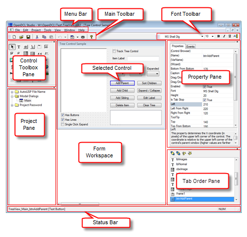

OpenDCL Studio is used to create and edit OpenDCL projects. A single project may contain multiple forms and pictures. Projects are saved in files with the file extension .odcl. The following diagram identifies the main areas of the OpenDCL Studio project editor.

New forms are added to a project by right-clicking in the project pane or by clicking the new form dropdown toolbar button in the main toolbar. Double clicking a form in the project pane opens it in the form workspace for editing. Note that the Window menu can be used to cascade or tile multiple forms for simultaneous viewing.
Controls can be added to a form by selecting the control type from the control toolbox, then dragging a rectangle on the form in the form workspace. A control's size and position can be changed by dragging the control or its edges, or by using the keyboard arrow keys to "nudge" the selected controls in any direction. A control's default text font can be modified using the font toolbar while the control is selected. Other control properties can be modified in the property pane, or by right-clicking on a control and selecting Properties.
The Tab Order pane shows the current form's tab order. Control names can be selected and dragged to a new position to change the tab order. Tab order does not control the order in which controls are painted on the form, so this cannot be used to put one overlapping control "above" another. Note that transparent controls always paint after opaque controls, so overlapping controls may be managed by setting the "top" control's background color to "transparent".
When the control selection button () is selected in the control toolbox, one or more controls can be selected for editing. Clicking on a control selects the control. If the [Ctrl] key is pressed while clicking, the control is added to the current selection; otherwise any previously selected controls are unselected. Clicking on a blank area of active form begins a drag operation that selects all controls inside or intersecting the drag rectangle.
When multiple controls are selected, property changes in the property pane are applied to all selected controls. This provides a convenient way to synchronize control properties among multiple controls. For example, left aligning multiple controls can be accomplished by selecting the controls, then entering a new value for their 'Left' property.
Changing design time control properties can be done in multiple ways. The most straightforward way to change control properties is by selecting the control, then editing the property value in the property pane. Clicking on the desired property name initiates an editor control for the property. For text or numeric property types, the edit control is a text box where new values can be typed, followed by [Enter] to apply the new value. Properties that accept an enumerated list display a dropdown combo box where a new value can be selected. List properties accept a list of values separated by vertical bar ("|") characters. Boolean properties simply display a check box that can be toggled on or off. Some properties, such as the 'Font' property, open a separate dialog box for making changes.
The control properties dialog provides a user friendly interface for many properties. The control properties dialog opens when double clicking on a control in the tab order pane, by selecting Properties in the control's right click context menu in the form workspace, or by clicking in the '(Wizard)' property field in the property pane. For control properties such as tooltips, fonts, and control alignment properties, the control properties dialog is the primary interface for making changes. For controls such as the grid, tab control, and image combo box, the control properties dialog provides access to hidden properties that cannot be changed via the properties pane.
Creating resizable forms is an important end user feature, and this can be easily done in OpenDCL Studio. The form's 'Allow Resizing' property must be 'True' to enable form resizing. When designing a resizable form, its controls must change with the form as it is resized by the user. The properties that control the resizing behavior of controls can be changed visually in the Geometry tab of the control properties dialog.